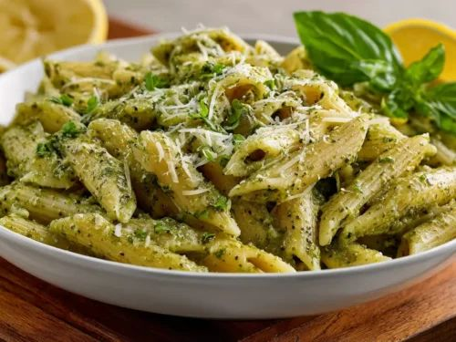

Back to Main Page
Pesto Pasta

Description
Pesto Pasta is a bright, aromatic Italian classic that showcases the vibrant, fresh flavors of Mediterranean cuisine.
This quick and effortless dish features tender pasta coated in a luxurious green sauce made from crushed fresh basil leaves, toasted pine nuts, pungent garlic, sharp cheese, and rich extra virgin olive oil.
Because the sauce requires absolutely no cooking, it retains a beautifully fresh, herbaceous bite that perfectly complements warm, freshly boiled pasta.
This recipe is a true superstar for busy weeknights, coming together in the exact amount of time it takes to boil your noodles.
The residual heat from the pasta melts the cheese within the pesto, creating a glossy, emulsified coating that clings beautifully to every single noodle.
It stands wonderfully on its own as a light vegetarian main course, but can easily be served alongside grilled cherry tomatoes or a slice of warm garlic bread.
Ingredients
- Pasta: 1 pound (16 ounces, short shapes like trofie, fusilli, or penne work best)
- Fresh basil leaves: 2 cups, packed (washed and thoroughly dried)
- Pine nuts: 1/3 cup (walnuts or almonds can be used as a substitute)
- Garlic: 2 medium cloves, peeled
- Extra virgin olive oil: 1/2 cup (high-quality oil yields the best flavor)
- Parmesan cheese: 1/2 cup, freshly grated (Parmigiano-Reggiano, or vegetarian alternative)
- Pecorino Romano cheese: 1/4 cup, freshly grated (or extra Parmesan)
- Pasta water: 1/2 cup (reserved right before draining the pasta)
- Salt and black pepper: To taste
Steps
- Toast the pine nuts: Place the pine nuts in a dry skillet over medium-low heat, tossing frequently for 3 to 4 minutes until they are lightly golden and fragrant, then remove immediately to cool.
- Boil the pasta: Bring a large pot of heavily salted water to a rolling boil, add your pasta, and cook according to the package directions until it reaches a perfect al dente texture.
- Blend the aromatics: Place the cooled pine nuts, peeled garlic cloves, and a pinch of salt into a food processor or blender, pulsing a few times until finely minced.
- Add the basil: Drop the fresh basil leaves into the food processor and pulse repeatedly until the leaves are coarsely chopped.
- Stream in the oil: With the food processor running on low speed, slowly drizzle the extra virgin olive oil in a steady stream until the mixture becomes smooth and emulsified.
- Stir in the cheese: Transfer the basil mixture into a large mixing bowl, stir in the grated Parmesan and Pecorino Romano cheeses by hand, and season with extra salt and black pepper to taste.
- Reserve pasta water: Just before draining your pasta, carefully scoop out 1/2 cup of the starchy cooking water and set it aside.
- Drain the pasta: Pour the pasta into a colander to drain the water completely, but do not rinse the noodles.
- Combine pasta and pesto: Add the warm pasta directly into the large bowl with the pesto sauce, tossing gently to coat the noodles evenly.
- Adjust the consistency: Splash a few tablespoons of the reserved warm pasta water into the bowl, stirring continuously until the pesto loosens into a smooth, glossy sauce that clings to the pasta.
- Serve immediately: Divide into bowls and serve hot, optionally garnishing with an extra sprinkle of grated cheese or a few fresh basil leaves.